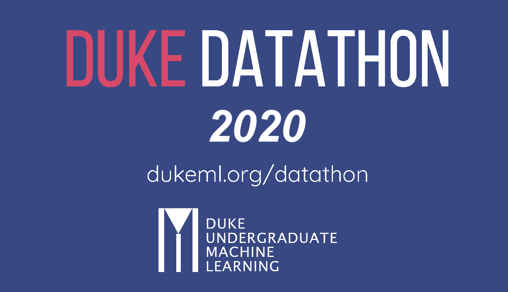
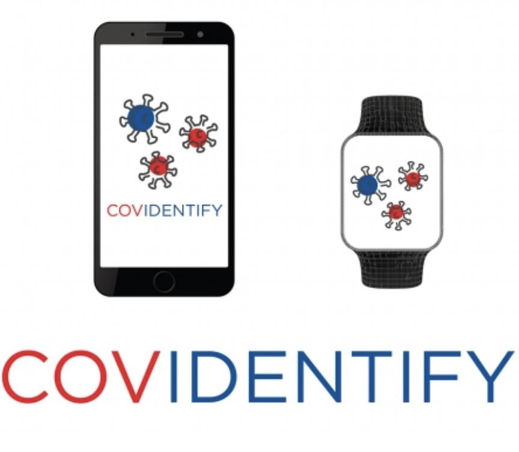

Duke Datathon 2020
With the continuous outbreak of COVID-19 around the world, many health experts believe that the pandemic will not end in 2021, and the cease of the pandemic will likely involve a mix of efforts. I partnered with 3 otehr graduate-level students to provide a comprehensive data analysis and concrete data-driven recommendations on the devastating long-term economic implications of COVID-19.
By leveraging several economic and Covid-19 specific data, our team built two models that would infer and predict the impact of COVID-19 on key economic indicators. As a result, our team won the 1st place in the competition.
Learn more
GitHub Repo

Wearable Technology in Identifying COVID-19
As COVID-19 cases started to climb in the U.S. and make their way into the Duke community, researchers from the Duke Schools of Medicine and Engineering began to search for solutions to problems felt or anticipated on local, national and global scales.
Using bio-data collected from wearable sensors, the team aims to develop a machine learning model that can early-detect onset of COVID or influenza-liked illnesses. On top of this, the team is also generating an automated dashboard to track the targeted population and available bio-data.
Learn More
Facial Expression Recognition in Remote Learning
The way education is delivered has been reshaped as the pandemic changes our livestyles.The goal of this project is to present a final application that can help content presenters (i.e: university instructors) to evaluate the overall performance of the class and improve communication efficiency.
Specifically, this application detects real time facial expressions/engagement of the audience using a convolutional neural network in a video conference setting and assesses the overall sentiment/engagement.
Demo Video
GitHub Repo
Airline Passenger Satisfaction Analysis
As many industries are becoming more and more competitive, many companies are actually making use of big data to relocate resources and to maximize profit by providing goods and services that are valued most by most customers. This is not an exception for the airline industry. In this project, a passenger satisfaction data set is provided by an airline company. I will investigate the associations between different rated/recorded factors and passenger’s satisfaction, and will come up with a model that recommends the top 3 and least 3 factors this airline company should focus on when relocating their resources.
GitHub Repo
Impact Estimation of Opioid Control Policies
In response to the opioid epidemic, states have implemented policies with the goal of decreasing opioid prescriptions, addictions, and deaths.
By collecting, cleaning, and restructuring million rows of data, this analysis evaluated the effectiveness of the implemented policy in three specific states that enacted stricter opioid regulations between 2007 and 2012.
The analysis results were visualized and presented to technical and non-technical stakeholders as a final showcase.
GitHub Repo
Beijing House Prices Prediction Using AWS
In the interest of intergating what has been learned in my first semester at Duke University, my team decided to make use of AWS sagemaker to run a machine learning prediction analysis on a web-scrapped data.
As one of the big cities in China, Beijing not only has a high population density, but also a big housing demand as more Chinese fresh graduates decide to pursue better job opportunities in this big city.
Starting from data collection, data wrangling, model building to data visualization, our team was able to implement a complete machine learning pipeline on AWS.
GitHub Repo